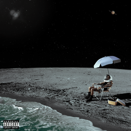
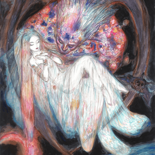
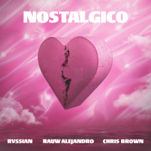

Rauw Alejandro
En esta página conocerás más sobre Rauw Alejandro, uno de los artistas más reconocidos de la música urbana actual. Aquí se mostrará información sobre su vida, trayectoria musical, éxitos más importantes y el impacto que ha tenido dentro del género del reggaetón y el trap latino. Además, podrás descubrir algunos de sus álbumes más famosos, colaboraciones con otros artistas y cómo su estilo innovador lo ha convertido en una figura destacada de la música internacional.
 |
 |
|||
| CUANDO BAJE EL SOL | ROSITA | DILE A EL | MUSEO | RELOJ |
 |
||||
| AMERICANA | ELEGÍ | NOSTÁLGICO | HAYAMI HANA | VACÍO |